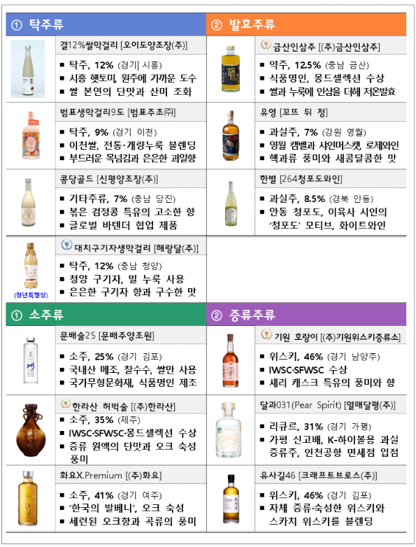

국세청이 선정한 ‘세계에 내놓을 2026 우리 대표술 12종’에 선정됐다.
국세청은 “지난 20일 서울지방국세청사에서 ‘2026 K-SUUL AWARDS’ 최종심사를 개최하고, 우수 주류 12개를 선정했다”고 23일 밝혔다.
지난해 처음 열린 ‘K-SUUL AWARDS’는 각 지역의 우수한 중소주류업체를 발굴하고,
우리 술의 경쟁력을 높여 해외시장 진출을 지원하기 위해 마련됐다.
이번 심사에는 전국 275개 업체가 총 564개의 출품의 경쟁을 펼쳤다.
해외시장 진출은 지랄ㅋㅋㅋㅋ 주세나 개편해라